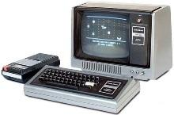
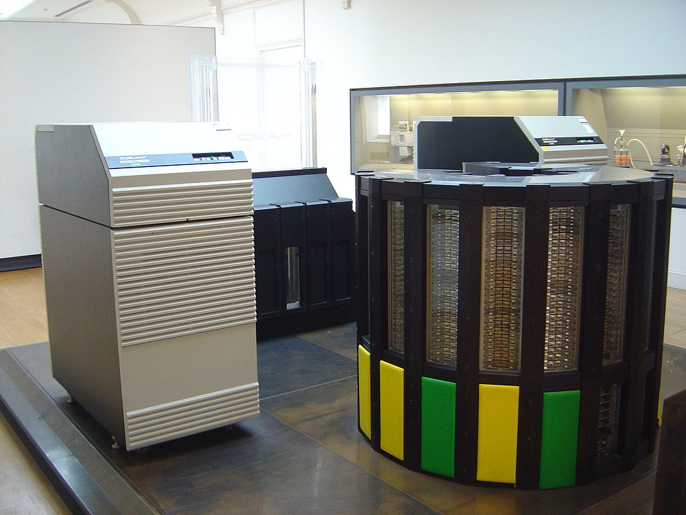
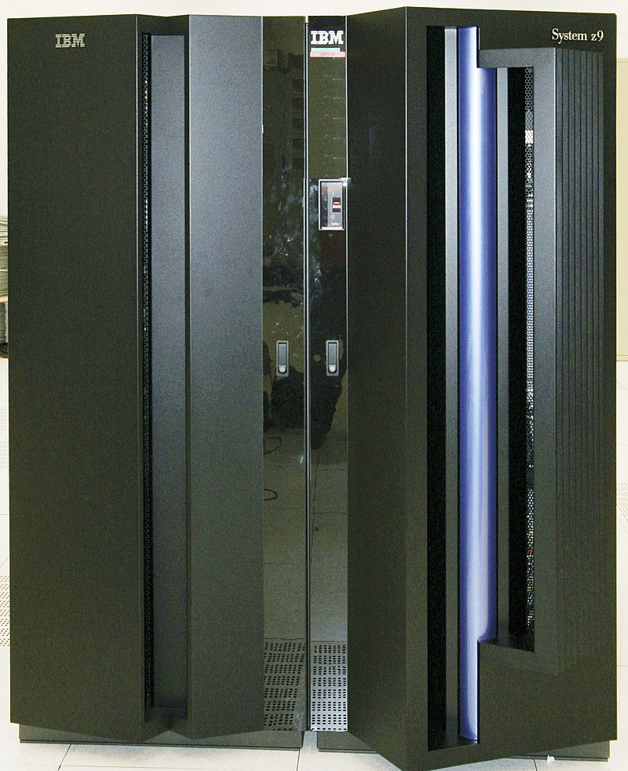

|
Меню
|
Основные виды ЭВМ
По размеру аппаратной части могут быть выделены различные классы ЭВМ.
- Мини-ЭВМ — малая ЭВМ, что имеет небольшие размеры и стоимость. Появившись в конце 1960-х годов, мини-ЭВМ имели широкие возможности в решении задач различных классов.
 - МикроЭВМ — ЭВМ малых размеров, созданная на базе микропроцессора. Ранее различали микроЭВМ следующих видов: встроенные и персональные, настольные и портативные, профессиональные и бытовые. Термин ПЭВМ (персональная ЭВМ) вытеснен синонимом «персональный компьютер» (сокращённо: ПК). В настоящее время, персональные компьютеры не относятся к микрокомпьютерам.

- Большие ЭВМ- ЭВМ, имеющая высокую производительность, большой объем основной и внешней памяти, обладающая способностью параллельной обработки данных и обеспечивающая как пакетный, так и интерактивный ( диалоговый) режимы работы. (мейнфреймы)

- Супер ЭВМ (суперкомпьютеры)-специализированная вычислительная машина, значительно превосходящая по своим техническим параметрам и скорости вычислений большинство существующих в мире компьютеров.
Как правило, современные суперкомпьютеры представляют собой большое число высокопроизводительных серверных компьютеров, соединённых друг с другом локальной высокоскоростной магистралью для достижения максимальной производительности в рамках реализации распараллеливания вычислительной задачи.

|